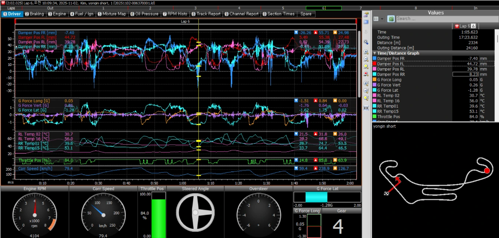
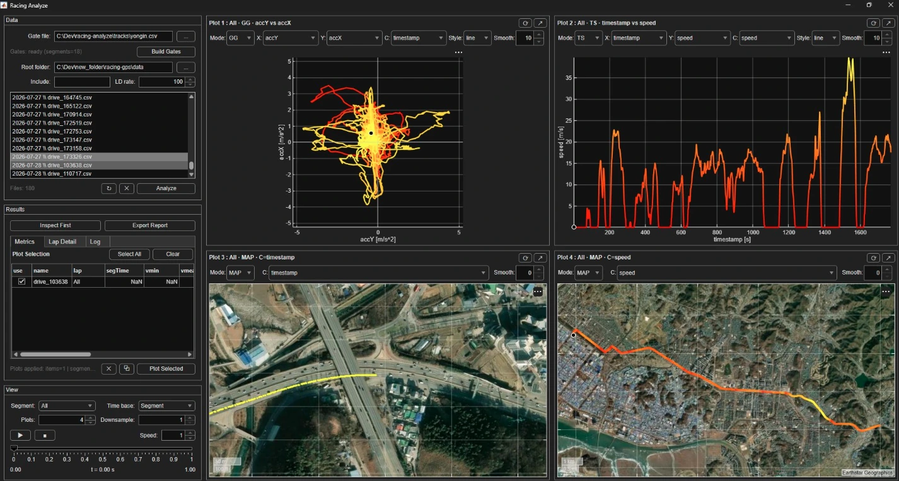
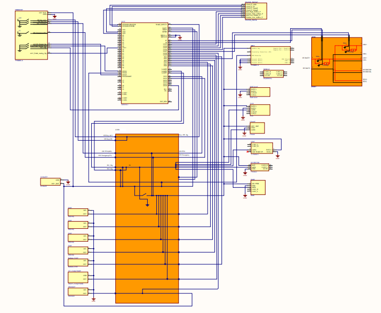
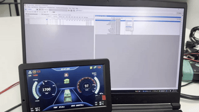
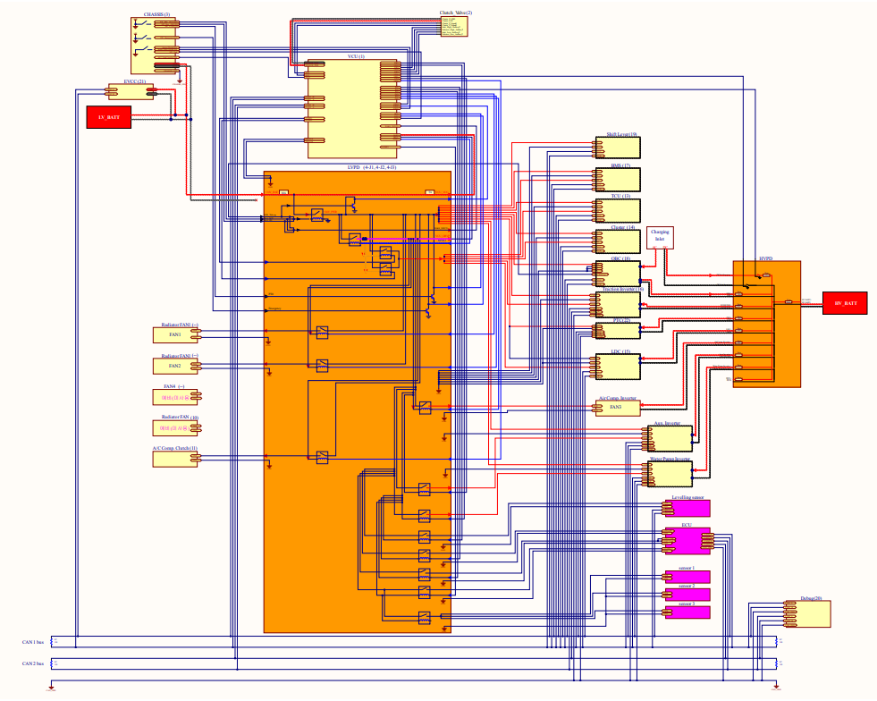
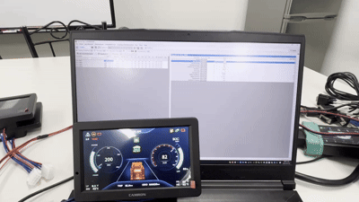
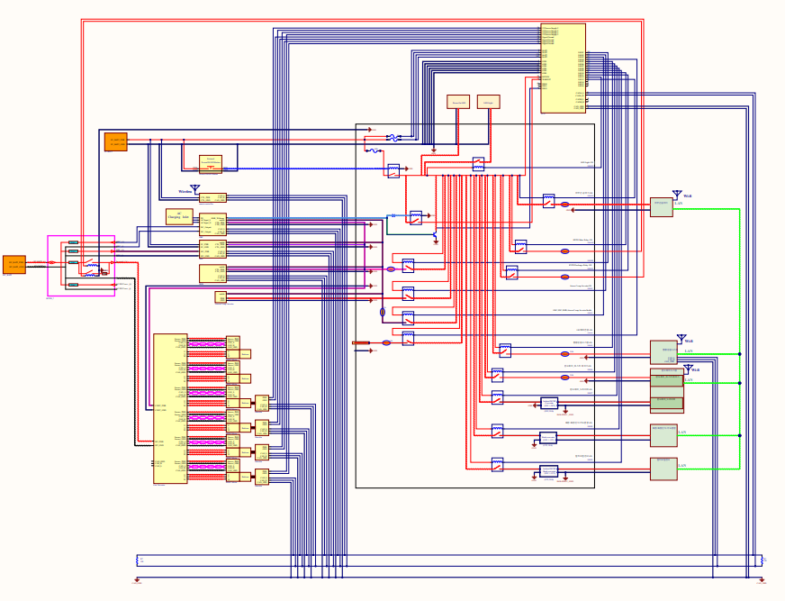
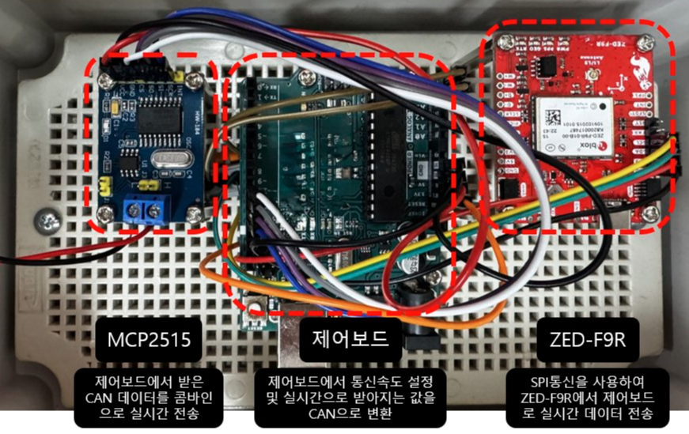
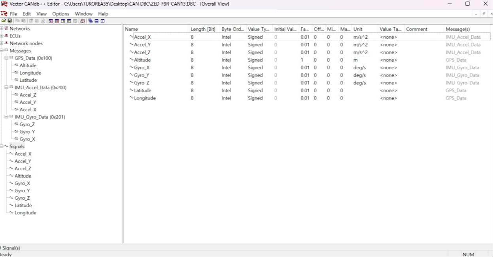

룩손레이싱 · GNSS/RTK · 2024.08~
레이싱 차량 고정밀 포지셔닝 시스템
GPS/RTK 기반 측위 시스템을 직접 설계·제작해 차량 운동을 분석하고, IMU 가속도 데이터와 MOTEC 데이터 로거로 주행 데이터를 수집·분석했습니다. CAN 배선 추가 등 전장 업무도 병행했습니다.
측위 오차 2~5cm
EV Fault Diagnosis · Vehicle Data Engineering
전기차 전장·제어 실무 경험을 바탕으로 인휠모터 전기차의 진동 고장 진단을 연구합니다. 현장에서 체감한 실제 문제를 연구 주제로 확장해, 실차 적용이 가능한 고장 진단 기술을 개발하는 것이 목표입니다.
CH.01 — RESEARCH
인휠모터는 노면 충격에 직접 노출되어 진동 기반 고장 진단 시 도로 이벤트가 오진의 원인이 됩니다. 본 연구는 진동 신호의 CNN 분류와 도로 이벤트 인식을 late-fusion 프레임워크로 결합하여, 진동 신뢰도가 애매한 경계 상황을 도로 맥락 정보로 해소하는 진단 체계를 제안합니다.
지도교수: 나재원 교수 · 한국공학대학교 기계설계공학과 석사학위논문
진동 신호를 로그-멜 스펙트로그램으로 변환해 심층 학습 기반으로 고장을 진단하는 알고리즘을 제안했습니다.
기계학회 국문논문집, 2026.04
진동 데이터 기반 고장 진단에 비전 기반 노면 인식을 결합해 진단 정확도를 높이는 연구를 발표했습니다.
자동차공학회 학회 발표, 2025.11
LSTM 기반 시계열 모델로 인휠모터 전기차의 고장을 진단하는 초기 연구를 발표했습니다.
기계학회 학회 발표, 2025.04
CH.02 — PROJECTS


룩손레이싱 · GNSS/RTK · 2024.08~
GPS/RTK 기반 측위 시스템을 직접 설계·제작해 차량 운동을 분석하고, IMU 가속도 데이터와 MOTEC 데이터 로거로 주행 데이터를 수집·분석했습니다. CAN 배선 추가 등 전장 업무도 병행했습니다.
측위 오차 2~5cm


진우에스엠씨 · 5톤 특장트럭 · 2022.04~2024.06
기존 HVPD/LVPD가 안전 기준에 미달함을 확인하고 처음부터 재설계했습니다. 고전압 하네스는 직접 제작하고, RAPTOR(GCM70) 제어기와 CAN 통신을 연동해 토크값 기반 2단 변속 제어로직을 구현했습니다.
HVPD/LVPD 재설계 · CAN 기반 변속 제어로직


진우에스엠씨 · 5톤급 전기소방차 · 2023.04~2024.06
급선회 경사로 주행 시 전복 위험을 낮추기 위해 IMU 센서값과 유압 서스펜션을 CAN 통신으로 연동한 전복방지 제어로직을 직접 설계·구현했습니다. 전장부품 선정과 하네스 제작도 병행했습니다.
IMU 연동 전복방지 제어로직

진우에스엠씨 · 소방 로봇 · 2023.06~2024.06
전장 파트 단독 담당자로 고온·진동·협소 공간 환경에서 요구되는 배터리, 인버터, 모터, 엔코더 등 전장 장비 전체를 선정하고 저전압 하네스 설계와 초기 제어로직 구현을 수행했습니다.
전장 시스템 단독 설계


대동 · 콤바인 자율주행 · 2024.07~2024.12
콤바인 농로 자율주행 과제에서 CAN 통신 기반 RTK 데이터 변환과 실시간 제어 피드백 로직 개발을 담당했습니다. 제어기 튜닝을 통해 습전 제어 성능도 개선했습니다.
CAN · RTK 데이터 변환 · 제어기 튜닝
CH.03 — CAREER
2025.08 ~ 2026.12 (수료)
학점 4.28/4.5 · HUVILAB
2021.12 ~ 2024.06 (2년 7개월)
전기차·특수목적 차량의 전장·하네스 설계 및 제어로직 담당
2016.03 ~ 2022.03
학점 3.27/4.5
~ 2016
특성화/마이스터고
CH.04 — SKILLS
CH.05 — CONTACT